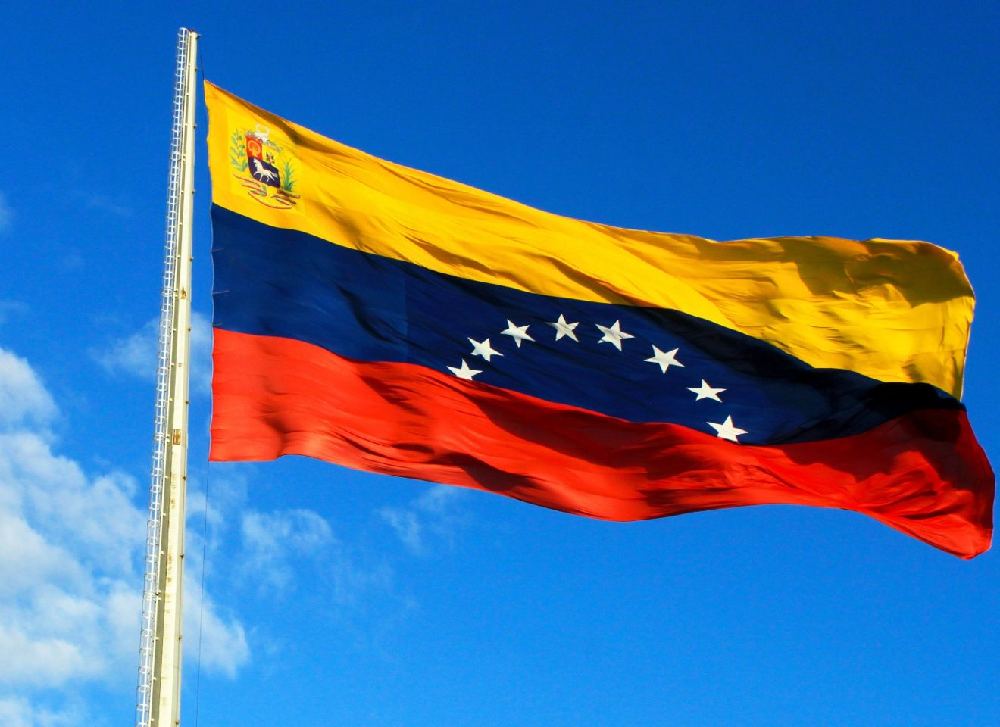
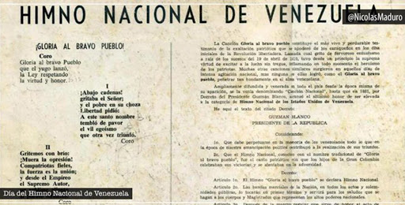

Uno de los maravillosos países de America del sur
Participación en Organismos Internacionales
La República Bolivariana de Venezuela es miembro de las Naciones Unidas (ONU), miembro fundador de la OEA, del Banco Mundial (BM), del Fondo Monetario Internacional (FMI), del Banco Interamericano de Desarrollo (BID), de la Organización de Países Productores de Petróleo (OPEP), Mercado Común del Sur (MERCOSUR), de la Asociación Latinoamericana de Integración (ALADI), entre otros.
Símbolos Patrios
La Bandera
Modificada por última vez el 12 de marzo de 2006, con la adición de la octava estrella, la bandera de la República Bolivariana de Venezuela contiene tres franjas horizontales de tamaño equiparable.
Escudo de Armas

El Escudo de Armas de la República Bolivariana de Venezuela tiene los colores de la Bandera Nacional, presentados en tres cuarteles. De acuerdo a la Ley de Bandera Nacional, Himno Nacional y Escudo de Armas de la República Bolivariana de Venezuela, del 9 de marzo de 2006, cada cuartel presenta características en específico
Himno Nacional
(Coro) ¡Gloria al bravo pueblo! que el yugo lanzó la ley respetando la virtud y honor. I ¡Abajo cadenas! (bis) gritaba el Señor (bis) y el pobre en su choza libertad pidió A este santo nombre tembló de pavor el vil egoísmo que otra vez triunfó. (Coro) II ¡Gritemos con brío! (bis) ¡Muera la opresión! (bis) Compatriotas fieles, la fuerza es la unión; y desde el empíreo el Supremo Autor, un sublime aliento al pueblo infundió. (Coro) III Unida con lazos (bis) que el cielo formó, (bis) la América toda existe en nación; y si el despotismo levanta la voz, seguid el ejemplo que Caracas dio. (Coro)